Detalle por agente
battery#0
Archivo: qtable_battery#0.npz
Métricas
- Estados únicos: 9
- Acciones: 3
- Cobertura (según config): 100.0%
- Completitud (estados con todas las acciones): 100.0%
- Q min/max/mean/std: -6.854 / 1.848 / -1.418 / 2.189
- Entropía media (softmax(Q)): 1.038
- Gap greedy (p10/p50/p90): 0.000 / 1.023 / 2.438
- Coherencia con reward: 71.4%
Las recompensas usan real_balance (no delta_ph). Esta validación es aproximada.
Gráficas
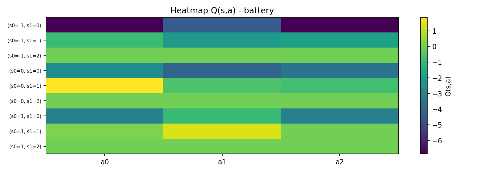
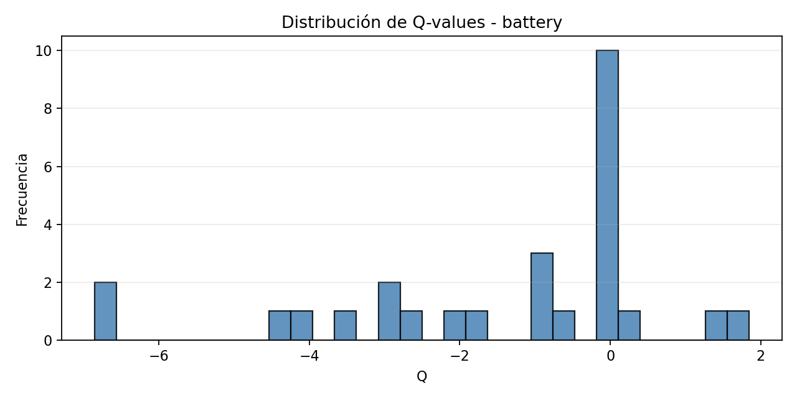
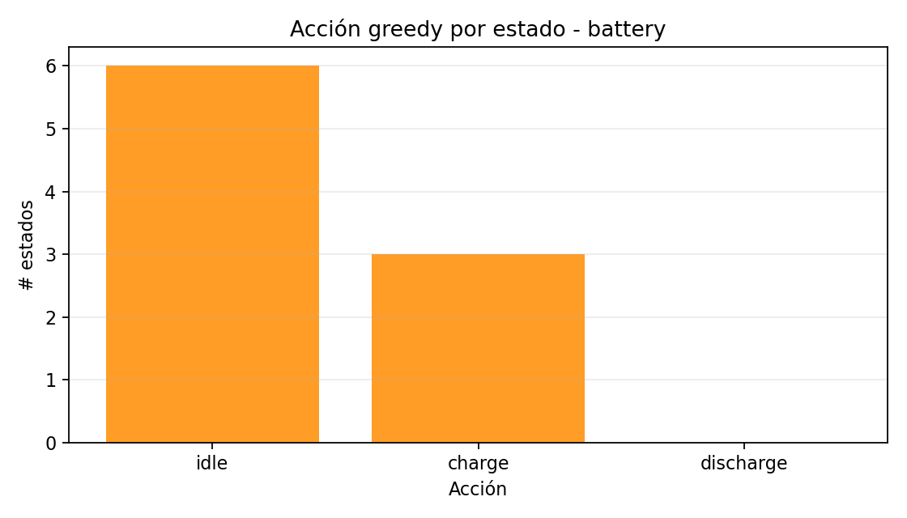
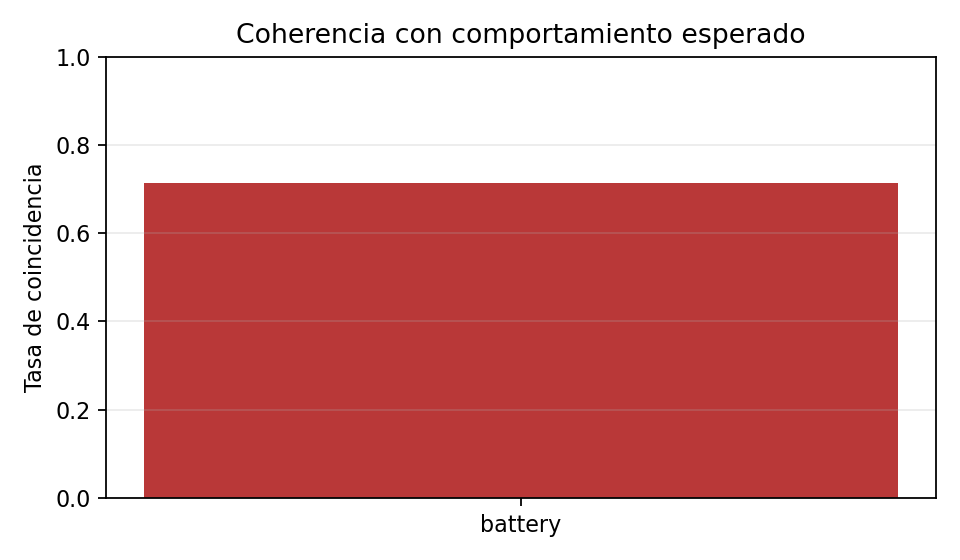
Recomendaciones prescriptivas (MARL)
- Coherencia parcial con la recompensa. Recomendación: aumentar episodios o suavizar actualización (alpha).
- Nota: la recompensa usa real_balance, pero el estado de la Q-table usa delta_ph. Si observas incoherencias, una mejora fuerte es alinear el estado con real_balance (y/o incluirlo como variable adicional).
grid#0
Archivo: qtable_grid#0.npz
Métricas
- Estados únicos: 9
- Acciones: 2
- Cobertura (según config): 100.0%
- Completitud (estados con todas las acciones): 100.0%
- Q min/max/mean/std: 0.000 / 5.852 / 2.054 / 1.973
- Entropía media (softmax(Q)): 0.544
- Gap greedy (p10/p50/p90): 0.000 / 2.298 / 3.774
- Coherencia con reward: 66.7%
Las recompensas usan real_balance (no delta_ph). Esta validación es aproximada.
Gráficas
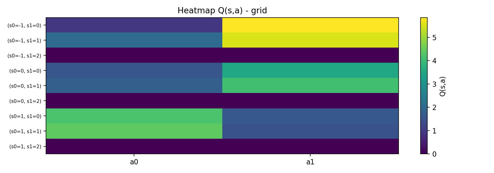
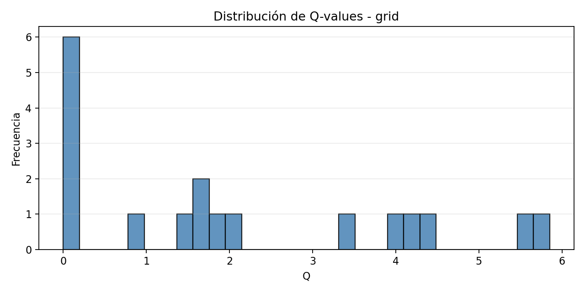
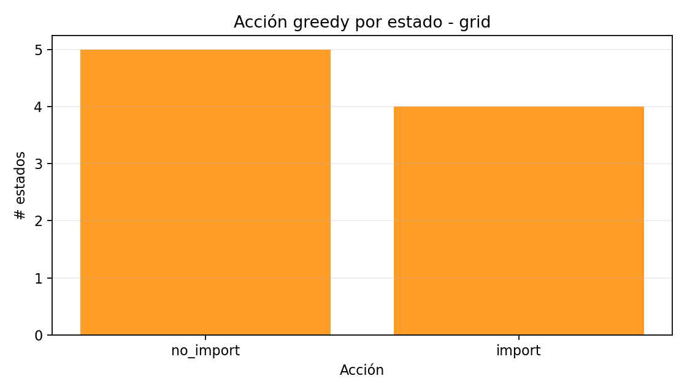
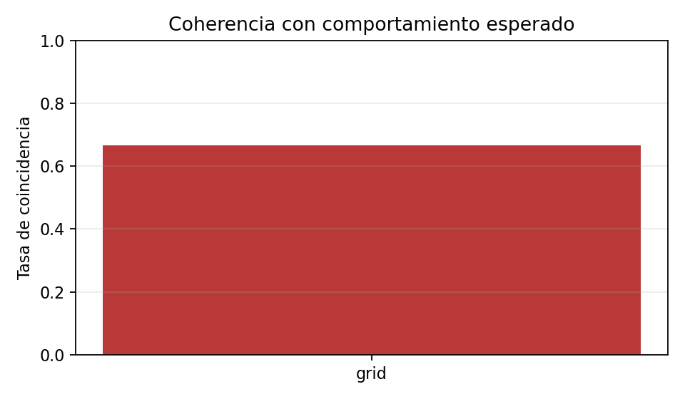
Recomendaciones prescriptivas (MARL)
- Coherencia parcial con la recompensa. Recomendación: aumentar episodios o suavizar actualización (alpha).
- Nota: la recompensa usa real_balance, pero el estado de la Q-table usa delta_ph. Si observas incoherencias, una mejora fuerte es alinear el estado con real_balance (y/o incluirlo como variable adicional).
wind#0
Archivo: qtable_wind#0.npz
Métricas
- Estados únicos: 6
- Acciones: 2
- Cobertura (según config): 100.0%
- Completitud (estados con todas las acciones): 100.0%
- Q min/max/mean/std: 0.000 / 10.000 / 4.667 / 4.714
- Entropía media (softmax(Q)): 0.686
- Gap greedy (p10/p50/p90): 0.000 / 0.000 / 2.000
- Coherencia con reward: 100.0%
Validación directa basada en core/rewards.py
Gráficas
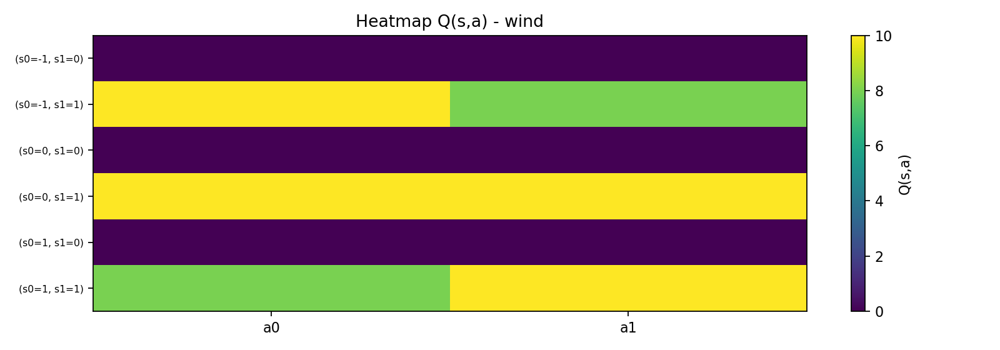
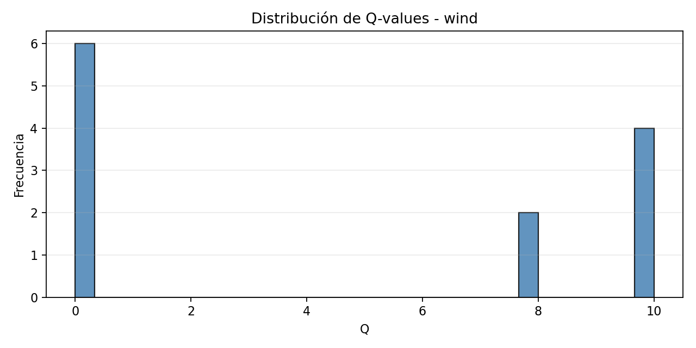
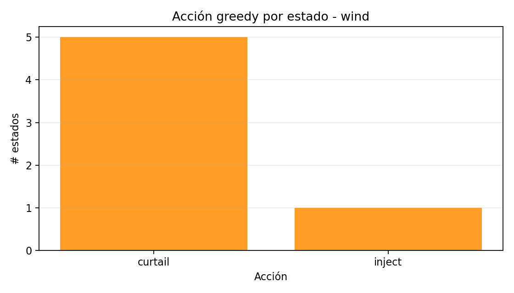
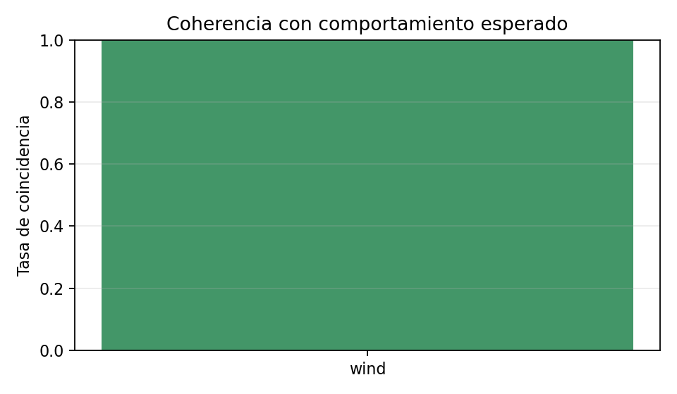
Recomendaciones prescriptivas (MARL)
- En MARL estigmérgico, revisa que 'delta_ph' se actualice correctamente entre agentes y que el orden de ejecución no genere sesgo sistemático (p.ej., un renovable siempre 'come' primero).